CODING AGENTS AS PIXEL WORLD MODELS
traex/DeepSeek-V4.1-Flash · 0134
点击播放 · 原生 RGB 像素
逐轮保存的候选
回放视频、检查图与代码变化。
每份候选均可单独播放。实际图片检查记录在下方工具轨迹中。
候选 01播放与检查图
点击播放 · 原生 RGB 像素

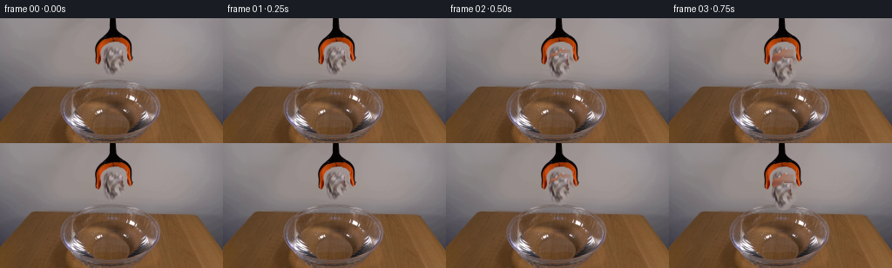
展开代码变化
--- 上一保存版本
+++ 本次保存版本
@@ -0,0 +1,257 @@
+from pathlib import Path
+
+import cv2
+import numpy as np
+from PIL import Image
+
+from artifact_io import save
+
+
+ROOT = Path(__file__).resolve().parent
+W, H, N, FPS = 256, 144, 20, 4
+
+
+def _smoothstep(edge0, edge1, value):
+ x = np.clip((value - edge0) / (edge1 - edge0), 0.0, 1.0)
+ return x * x * (3.0 - 2.0 * x)
+
+
+def _paper_alpha():
+ """An irregular, softly antialiased silhouette around the crumpled ball."""
+ yy, xx = np.mgrid[0:H, 0:W]
+ shapes = [
+ ((132.7, 51.0), (12.2, 14.8)),
+ ((136.0, 39.3), (7.0, 7.2)),
+ ((123.8, 47.0), (6.3, 7.6)),
+ ((142.0, 51.8), (5.2, 7.1)),
+ ((131.8, 62.0), (8.0, 5.3)),
+ ((126.8, 58.5), (6.0, 5.8)),
+ ]
+ distance = np.full((H, W), 10.0, dtype=np.float32)
+ for (cx, cy), (rx, ry) in shapes:
+ d = np.sqrt(((xx - cx) / rx) ** 2 + ((yy - cy) / ry) ** 2)
+ distance = np.minimum(distance, d)
+ alpha = 1.0 - _smoothstep(0.91, 1.03, distance)
+
+ # Keep the dark stem above the fingers in the plate.
+ alpha[(yy < 36) & (xx > 132) & (xx < 143)] = 0.0
+ return (alpha * 255).astype(np.uint8)
+
+
+def _clean_plate(source):
+ """Remove the paper while retaining both grabber fingers."""
+ alpha = _paper_alpha().astype(np.float32) / 255.0
+ clean = source.astype(np.float32).copy()
+ rng = np.random.default_rng(134)
+ noise = rng.normal(0.0, 0.9, (H, W, 1)).astype(np.float32)
+
+ for y in range(30, 70):
+ left = source[y, 112:118].mean(axis=0)
+ right = source[y, 151:157].mean(axis=0)
+ for x in range(118, 151):
+ amount = (x - 117) / 34.0
+ # A slight vertical gradient follows the softly lit wall.
+ wall = left * (1.0 - amount) + right * amount
+ wall *= 1.0 + (y - 48.0) * 0.0007
+ fill = wall + noise[y, x]
+ clean[y, x] = clean[y, x] * (1.0 - alpha[y, x]) + fill * alpha[y, x]
+
+ # The silhouette reaches just past the compact region above.
+ roi = np.zeros((H, W), dtype=np.uint8)
+ roi[28:72, 116:153] = 255
+ clean = clean.astype(np.uint8)
+ clean[roi == 0] = source[roi == 0]
+ return clean
+
+
+def _warp_sprite(sprite, angle=0.0, scale=1.0):
+ h, w = sprite.shape[:2]
+ matrix = cv2.getRotationMatrix2D((w * 0.5, h * 0.5), angle, scale)
+ return cv2.warpAffine(
+ sprite,
+ matrix,
+ (w, h),
+ flags=cv2.INTER_LINEAR,
+ borderMode=cv2.BORDER_CONSTANT,
+ borderValue=(0, 0, 0, 0),
+ )
+
+
+def _blend_sprite(canvas, sprite, center):
+ sh, sw = sprite.shape[:2]
+ x = int(round(center[0] - sw * 0.5))
+ y = int(round(center[1] - sh * 0.5))
+ x0, y0 = max(0, x), max(0, y)
+ x1, y1 = min(W, x + sw), min(H, y + sh)
+ if x1 <= x0 or y1 <= y0:
+ return
+
+ src = sprite[y0 - y : y1 - y, x0 - x : x1 - x]
+ dst = canvas[y0:y1, x0:x1]
+ alpha = src[:, :, 3:4].astype(np.float32) / 255.0
+ rgb = src[:, :, :3].astype(np.float32)
+ dst[:] = np.clip(rgb * alpha + dst.astype(np.float32) * (1.0 - alpha), 0, 255).astype(np.uint8)
+
+
+def _reflection(canvas, sprite, center, surface_y=84.0, opacity=0.16):
+ sh, sw = sprite.shape[:2]
+ reflected = np.flipud(sprite).copy()
+ reflected[:, :, 3] = (reflected[:, :, 3].astype(np.float32) * opacity).astype(np.uint8)
+ reflected_center = (center[0] + 0.4, surface_y + (surface_y - center[1]) * 0.72)
+ temp = np.zeros_like(canvas)
+ _blend_sprite(temp, reflected, reflected_center)
+
+ yy, xx = np.mgrid[0:H, 0:W]
+ water = (((xx - 128.0) / 43.0) ** 2 + ((yy - 87.0) / 19.5) ** 2) < 1.0
+ lower_rim = yy > 77
+ mask = water & lower_rim
+ canvas[mask] = np.clip(
+ canvas[mask].astype(np.float32) * 0.92 + temp[mask].astype(np.float32) * 0.55,
+ 0,
+ 255,
+ ).astype(np.uint8)
+
+
+def _ripples(canvas, age, cx=133.0, cy=85.5):
+ if age <= 0:
+ return
+ yy, xx = np.mgrid[0:H, 0:W]
+ water = (((xx - 128.0) / 43.5) ** 2 + ((yy - 87.0) / 20.0) ** 2) < 1.0
+ base = canvas.astype(np.float32)
+
+ for index, delay in enumerate((0.0, 0.13, 0.27)):
+ local_age = age - delay
+ if local_age <= 0:
+ continue
+ radius = 3.0 + 37.0 * (1.0 - np.exp(-1.7 * local_age))
+ thickness = 1.25 + 0.45 * index
+ ellipse = np.sqrt(((xx - cx) / radius) ** 2 + ((yy - cy) / (radius * 0.42)) ** 2)
+ ring = np.exp(-((ellipse - 1.0) / (thickness / radius)) ** 2)
+ trough = np.exp(-((ellipse - 0.91) / (0.9 / radius)) ** 2)
+ fade = np.exp(-1.5 * local_age)
+ shade = (ring * 10.0 - trough * 6.5) * fade
+ base += (shade * water)[:, :, None] * np.array([1.0, 0.95, 0.84])
+
+ canvas[:] = np.clip(base, 0, 255).astype(np.uint8)
+
+
+def _splash(canvas, impact_age):
+ if impact_age < 0 or impact_age > 0.82:
+ return
+ strength = np.exp(-3.0 * impact_age)
+ yy, xx = np.mgrid[0:H, 0:W]
+ ring = np.sqrt(((xx - 133.0) / 11.0) ** 2 + ((yy - 84.0) / 4.0) ** 2)
+ foam = np.exp(-((ring - 1.0) / 0.22) ** 2) * strength
+ water = (((xx - 128.0) / 44.0) ** 2 + ((yy - 87.0) / 20.0) ** 2) < 1.0
+ base = canvas.astype(np.float32)
+ base += (foam * water * 42.0)[:, :, None] * np.array([1.0, 0.96, 0.88])
+
+ particles = [
+ (-10, -8, 1.5),
+ (9, -10, 1.2),
+ (-14, -3, 1.0),
+ (14, -4, 0.9),
+ (-4, -12, 0.8),
+ (4, -13, 0.7),
+ ]
+ for dx, dy, size in particles:
+ px = int(round(133 + dx * (0.4 + impact_age * 1.8)))
+ py = int(round(84 + dy * (0.4 + impact_age * 1.7)))
+ cv2.circle(
+ base,
+ (px, py),
+ max(1, int(round(size))),
+ (205 * strength + 40, 198 * strength + 40, 182 * strength + 40),
+ -1,
+ cv2.LINE_AA,
+ )
+ canvas[:] = np.clip(base, 0, 255).astype(np.uint8)
+
+
+def _ball_state(frame):
+ t = frame / FPS
+ release = 0.08
+ impact = 1.02
+ x0, y0 = 133.1, 49.2
+ if frame == 0:
+ return x0, y0, 0.0, 1.0
+ if t < impact:
+ dt = max(0.0, t - release)
+ y = y0 + 0.5 * 49.0 * dt * dt
+ x = x0 + 0.55 * dt
+ angle = -0.8 * dt + 2.8 * dt * dt
+ return x, y, angle, 1.0
+
+ dt = t - impact
+ x = x0 + 0.55 * (impact - release) + 1.35 * (1.0 - np.exp(-1.4 * dt))
+ y = 72.7 - 1.8 * np.exp(-3.1 * dt) * np.cos(11.0 * dt)
+ angle = 1.8 + 3.2 * np.exp(-2.5 * dt) * np.sin(8.0 * dt)
+ scale = 0.96 - 0.025 * (1.0 - np.exp(-4.0 * dt))
+ return x, y, angle, scale
+
+
+def _wet_tint(sprite, amount):
+ if amount <= 0:
+ return sprite
+ out = sprite.astype(np.float32)
+ wet = np.array([0.79, 0.88, 0.91], dtype=np.float32)
+ out[:, :, :3] *= wet * amount + (1.0 - amount)
+ out[:, :, :3] -= np.array([0.0, 3.0, 4.0], dtype=np.float32) * amount
+ out[:, :, :3] = np.clip(out[:, :, :3], 0, 255)
+ return out.astype(np.uint8)
+
+
+def generate():
+ source = np.asarray(Image.open(ROOT / "first_frame.png").convert("RGB"))
+ assert source.shape == (H, W, 3)
+
+ alpha = _paper_alpha()
+ ball_roi = source[26:74, 111:158]
+ ball_alpha = alpha[26:74, 111:158]
+ ball = np.dstack((ball_roi, ball_alpha))
+ clean = _clean_plate(source)
+
+ frames = np.empty((N, H, W, 3), dtype=np.uint8)
+ frames[0] = source
+
+ for frame in range(1, N):
+ canvas = clean.copy()
+ t = frame / FPS
+ x, y, angle, scale = _ball_state(frame)
+ wet = float(np.clip((t - 0.98) / 0.55, 0.0, 1.0))
+
+ if t >= 1.0:
+ _ripples(canvas, max(0.0, t - 1.02))
+ _splash(canvas, t - 1.02)
+
+ sprite = _warp_sprite(ball, angle, scale)
+ sprite = _wet_tint(sprite, wet)
+
+ if t > 1.18:
+ _reflection(canvas, sprite, (x, y), opacity=0.14 * wet)
+
+ _blend_sprite(canvas, sprite, (x, y))
+
+ # A tiny wet highlight makes the paper read as floating after impact.
+ if t >= 1.25:
+ glow = np.zeros_like(canvas)
+ cv2.ellipse(
+ glow,
+ (int(round(x + 1)), int(round(y - 4))),
+ (8, 3),
+ 0,
+ 195,
+ 345,
+ (32, 38, 40),
+ 1,
+ cv2.LINE_AA,
+ )
+ canvas = np.clip(canvas.astype(np.int16) + glow.astype(np.int16), 0, 255).astype(np.uint8)
+
+ frames[frame] = canvas
+
+ save(frames, ROOT)
+
+
+if __name__ == "__main__":
+ generate()
候选 02播放与检查图
点击播放 · 原生 RGB 像素

展开代码变化
--- 上一保存版本
+++ 本次保存版本
@@ -129,10 +129,43 @@
ring = np.exp(-((ellipse - 1.0) / (thickness / radius)) ** 2)
trough = np.exp(-((ellipse - 0.91) / (0.9 / radius)) ** 2)
fade = np.exp(-1.5 * local_age)
- shade = (ring * 10.0 - trough * 6.5) * fade
+ shade = (ring * 17.0 - trough * 9.0) * fade
base += (shade * water)[:, :, None] * np.array([1.0, 0.95, 0.84])
canvas[:] = np.clip(base, 0, 255).astype(np.uint8)
+
+
+def _warp_water(canvas, age, cx=133.0, cy=85.5):
+ """Refract the reflected tabletop beneath an expanding wave front."""
+ if age <= 0:
+ return
+ yy, xx = np.mgrid[0:H, 0:W].astype(np.float32)
+ water = (((xx - 128.0) / 43.5) ** 2 + ((yy - 87.0) / 20.0) ** 2) < 1.0
+ dx = xx - cx
+ dy = (yy - cy) / 0.43
+ radial = np.sqrt(dx * dx + dy * dy) + 1e-5
+ direction_x = dx / radial
+ direction_y = (dy * 0.43) / radial
+
+ displacement = np.zeros_like(xx)
+ for delay, strength in ((0.0, 1.35), (0.19, 0.75)):
+ local_age = age - delay
+ if local_age <= 0:
+ continue
+ front = 3.0 + 38.0 * (1.0 - np.exp(-1.7 * local_age))
+ band = np.exp(-((radial - front) / 2.8) ** 2)
+ displacement += strength * np.exp(-0.9 * local_age) * band
+
+ map_x = np.clip(xx - direction_x * displacement, 0, W - 1).astype(np.float32)
+ map_y = np.clip(yy - direction_y * displacement, 0, H - 1).astype(np.float32)
+ warped = cv2.remap(
+ canvas,
+ map_x,
+ map_y,
+ interpolation=cv2.INTER_LINEAR,
+ borderMode=cv2.BORDER_REFLECT_101,
+ )
+ canvas[water] = warped[water]
def _splash(canvas, impact_age):
@@ -140,23 +173,22 @@
return
strength = np.exp(-3.0 * impact_age)
yy, xx = np.mgrid[0:H, 0:W]
- ring = np.sqrt(((xx - 133.0) / 11.0) ** 2 + ((yy - 84.0) / 4.0) ** 2)
- foam = np.exp(-((ring - 1.0) / 0.22) ** 2) * strength
+ ring = np.sqrt(((xx - 133.0) / 9.0) ** 2 + ((yy - 84.3) / 2.8) ** 2)
+ foam = np.exp(-((ring - 1.0) / 0.3) ** 2) * strength
+ foam *= 0.6 + 0.4 * np.sin(xx * 1.9 + yy * 2.7) ** 2
water = (((xx - 128.0) / 44.0) ** 2 + ((yy - 87.0) / 20.0) ** 2) < 1.0
base = canvas.astype(np.float32)
- base += (foam * water * 42.0)[:, :, None] * np.array([1.0, 0.96, 0.88])
+ base += (foam * water * 20.0)[:, :, None] * np.array([1.0, 0.96, 0.88])
particles = [
- (-10, -8, 1.5),
- (9, -10, 1.2),
- (-14, -3, 1.0),
- (14, -4, 0.9),
- (-4, -12, 0.8),
- (4, -13, 0.7),
+ (-9, -3, 1.1),
+ (8, -4, 0.9),
+ (-12, -1, 0.7),
+ (13, -2, 0.6),
]
for dx, dy, size in particles:
- px = int(round(133 + dx * (0.4 + impact_age * 1.8)))
- py = int(round(84 + dy * (0.4 + impact_age * 1.7)))
+ px = int(round(133 + dx * (0.5 + impact_age * 1.4)))
+ py = int(round(84 + dy * (0.5 + impact_age * 1.2) - impact_age * 2.0))
cv2.circle(
base,
(px, py),
@@ -180,13 +212,14 @@
y = y0 + 0.5 * 49.0 * dt * dt
x = x0 + 0.55 * dt
angle = -0.8 * dt + 2.8 * dt * dt
- return x, y, angle, 1.0
+ scale = 1.0 + 0.065 * np.clip(dt / (impact - release), 0.0, 1.0)
+ return x, y, angle, scale
dt = t - impact
x = x0 + 0.55 * (impact - release) + 1.35 * (1.0 - np.exp(-1.4 * dt))
y = 72.7 - 1.8 * np.exp(-3.1 * dt) * np.cos(11.0 * dt)
angle = 1.8 + 3.2 * np.exp(-2.5 * dt) * np.sin(8.0 * dt)
- scale = 0.96 - 0.025 * (1.0 - np.exp(-4.0 * dt))
+ scale = 1.035 - 0.04 * (1.0 - np.exp(-4.0 * dt))
return x, y, angle, scale
@@ -221,6 +254,7 @@
wet = float(np.clip((t - 0.98) / 0.55, 0.0, 1.0))
if t >= 1.0:
+ _warp_water(canvas, max(0.0, t - 1.02))
_ripples(canvas, max(0.0, t - 1.02))
_splash(canvas, t - 1.02)
可观测工具轨迹
实际执行的命令与返回图片。
命令 1exit 0
/bin/bash -c "pwd && rg --files -g '"'!*__pycache__*'"' -g '"'!*.pyc'"' | sed -n '1,160p'"
命令 2exit 0
/bin/bash -c "sed -n '1,240p' prompt.txt"
命令 3exit 0
/bin/bash -c "sed -n '1,280p' GENERATION_RULES.md"
命令 4exit 0
/bin/bash -c "find . -maxdepth 2 -type f -printf '%p %s bytes\\n' | sort | sed -n '1,200p'"
命令 5exit 0
/bin/bash -c "sed -n '1,260p' artifact_io.py"
命令 6exit 0
/bin/bash -c "sed -n '1,260p' player_template.html"
命令 7exit 0
/bin/bash -c "python - <<'PY'
from PIL import Image
import numpy as np
im=Image.open('first_frame.png').convert('RGB')
a=np.asarray(im)
print(im.size, im.mode, a.dtype, a.min(), a.max(), a.mean(axis=(0,1)))
PY"命令 8exit 0
/bin/bash -c "mkdir -p .tmp && python - <<'PY'
from PIL import Image
im=Image.open('first_frame.png')
im.crop((90,0,170,90)).resize((640,720), Image.Resampling.NEAREST).save('.tmp/paper_crop.png')
im.crop((55,65,205,144)).resize((750,395), Image.Resampling.NEAREST).save('.tmp/bowl_crop.png')
PY"命令 9exit 0
/bin/bash -c "python - <<'PY'
from PIL import Image, ImageDraw, ImageFont
im=Image.open('first_frame.png').convert('RGB')
x0,y0,x1,y1=100,0,165,70
crop=im.crop((x0,y0,x1,y1)).resize(((x1-x0)*10,(y1-y0)*10),Image.Resampling.NEAREST)
d=ImageDraw.Draw(crop)
for x in range(x0,x1,5):
xx=(x-x0)*10; d.line((xx,0,xx,crop.height), fill=(255,0,0), width=1); d.text((xx+2,2),str(x),fill=(255,0,0))
for y in range(y0,y1,5):
yy=(y-y0)*10; d.line((0,yy,crop.width,yy), fill=(0,0,255), width=1); d.text((2,yy+1),str(y),fill=(0,0,255))
crop.save('.tmp/paper_grid.png')
PY"命令 10exit 0
/bin/bash -c "python - <<'PY'
from PIL import Image
import numpy as np
im=np.asarray(Image.open('first_frame.png').convert('RGB'))
# print median colors of wall around paper and table/bowl
for name,box in [('wall',(0,0,256,62)),('water',(85,76,185,104)),('table',(0,120,60,144)),('rim',(75,70,190,86))]:
x0,y0,x1,y1=box;a=im[y0:y1,x0:x1]
print(name, np.median(a.reshape(-1,3),axis=0), a.mean((0,1)))
PY"命令 11exit 0
/bin/bash -c "python - <<'PY'
from PIL import Image
im=Image.open('first_frame.png')
im.crop((55,60,205,144)).resize((900,504),Image.Resampling.NEAREST).save('.tmp/bowl_big.png')
PY"命令 12exit 0
/bin/bash -c "python - <<'PY'
try:
import cv2; print('cv2',cv2.__version__)
except Exception as e: print('no cv2',e)
try:
import scipy; print('scipy',scipy.__version__)
except Exception as e: print('no scipy',e)
PY"命令 13exit 0
/bin/bash -c "python - <<'PY'
import cv2, numpy as np
from PIL import Image
im=np.asarray(Image.open('first_frame.png').convert('RGB'))
gray=cv2.cvtColor(im,cv2.COLOR_RGB2GRAY)
for th in [90,100,110,120,130]:
m=(gray<th).astype(np.uint8)
n,lab,st,cen=cv2.connectedComponentsWithStats(m,8)
comps=sorted([(int(st[i,4]),tuple(map(int,st[i,:4]))) for i in range(1,n)],reverse=True)[:10]
print(th,comps)
PY"命令 14exit 0
/bin/bash -c "python generate.py && python - <<'PY'
from pathlib import Path
from PIL import Image
import numpy as np
import json
src=np.asarray(Image.open('first_frame.png').convert('RGB'))
f0=np.asarray(Image.open('frames/00.png').convert('RGB'))
print('frame0 exact', np.array_equal(src,f0))
with np.load('pixels.npz') as z:
print('pixels',z['pixels'].shape,z['pixels'].dtype)
for i in [0,1,2,3,4,5,6,8,10,12,16,19]:
a=np.asarray(Image.open(f'frames/{i:02d}.png').convert('RGB'))
print(i, a.mean((0,1)).round(2), 'changed', np.count_nonzero(a"'!=f0))
print('"'size',Path('index.html').stat().st_size)
PY"命令 15exit 0
/bin/bash -c "python - <<'PY'
from PIL import Image,ImageDraw
inds=[1,2,3,4,5,6,8,12,16,19]
out=Image.new('RGB',(512,720),(24,27,32))
d=ImageDraw.Draw(out)
for j,i in enumerate(inds):
im=Image.open(f'frames/{i:02d}.png').resize((512,288),Image.Resampling.NEAREST)
x=(j%2)*256;y=(j//2)*144
out.paste(im.crop((128,0,384,144)).resize((256,144),Image.Resampling.NEAREST),(x,y))
d.text((x+4,y+4),f'{i:02d}',fill='white')
out.save('.tmp/frames_grid.png')
PY"命令 16exit 0
/bin/bash -c "python - <<'PY'
from PIL import Image
for i in [1,3,4,5,6,8,12,19]:
im=Image.open(f'frames/{i:02d}.png')
im.crop((95,25,175,115)).resize((480,540),Image.Resampling.NEAREST).save(f'.tmp/f{i:02d}_crop.png')
PY"命令 17exit 0
/bin/bash -c "python - <<'PY'
from PIL import Image
import numpy as np
im=np.asarray(Image.open('first_frame.png').convert('RGB'))
# print RGB around paper every 2 pixels, rows 34-66 cols 118-150
for y in range(34,67,2):
s=''
for x in range(118,151,2):
r,g,b=im[y,x]
if r>185: c='.'
elif r>150: c='+'
elif r>110: c='o'
elif r>70: c='x'
else: c='#'
s+=c
print(f'{y:02d} {s}')
PY"命令 18exit 0
/bin/bash -c "python - <<'PY'
from PIL import Image
im=Image.open('first_frame.png')
im.crop((108,28,155,75)).resize((940,940),Image.Resampling.NEAREST).save('.tmp/paper_huge.png')
PY"命令 19exit 0
/bin/bash -c "python generate.py && python - <<'PY'
from PIL import Image
import numpy as np
src=np.asarray(Image.open('first_frame.png').convert('RGB'))
f0=np.asarray(Image.open('frames/00.png').convert('RGB'))
print('exact',np.array_equal(src,f0))
for i in [1,2,3,4,5,6,8,10,12,16,19]:
a=np.asarray(Image.open(f'frames/{i:02d}.png').convert('RGB'))
print(i, 'changed', np.count_nonzero(a"'!=f0), '"'mean',a.mean((0,1)).round(2))
PY"命令 20exit 0
/bin/bash -c "python - <<'PY'
from PIL import Image, ImageDraw
inds=[0,1,2,3,4,5,6,7,8,9,10,11,12,13,14,15,16,17,18,19]
out=Image.new('RGB',(1024,756),(24,27,32));d=ImageDraw.Draw(out)
for i in inds:
im=Image.open(f'frames/{i:02d}.png')
x=(i%4)*256;y=(i//4)*151
out.paste(im,(x,y+7));d.text((x+5,y),f'{i:02d}',fill='white')
out.save('.tmp/all_frames.png')
PY"命令 21exit 0
/bin/bash -c "python - <<'PY'
from PIL import Image
im=Image.open('first_frame.png')
im.crop((60,65,195,120)).resize((1080,440),Image.Resampling.NEAREST).save('.tmp/water_src.png')
PY"命令 22exit 0
/bin/bash -c "python - <<'PY'
from PIL import Image
for i in [5,6,8,12,16]:
im=Image.open(f'frames/{i:02d}.png')
im.crop((60,65,195,120)).resize((1080,440),Image.Resampling.NEAREST).save(f'.tmp/w{i:02d}.png')
PY"视觉工具实际返回图片 1
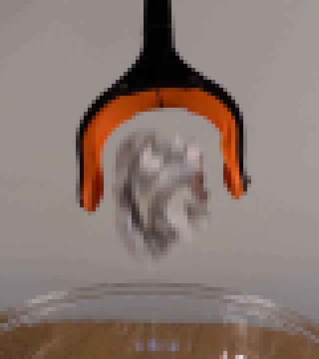
视觉工具实际返回图片 2
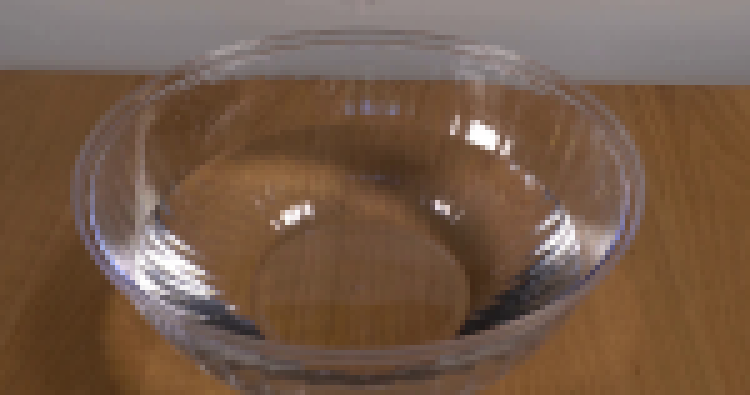
视觉工具实际返回图片 3

视觉工具实际返回图片 4
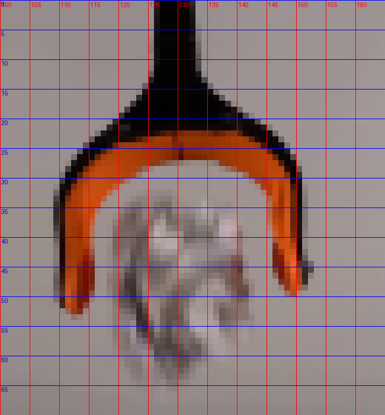
视觉工具实际返回图片 5
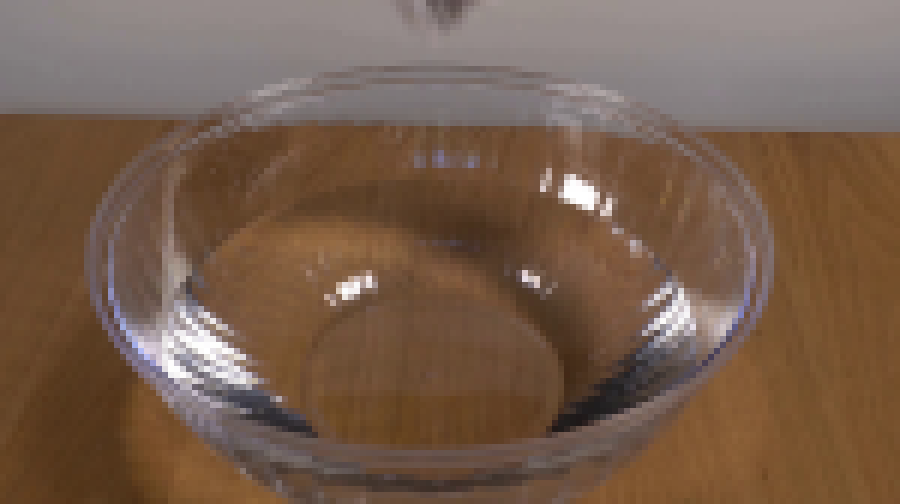
视觉工具实际返回图片 6
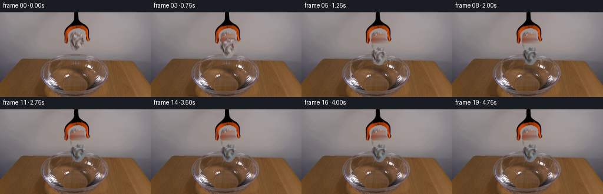
视觉工具实际返回图片 7
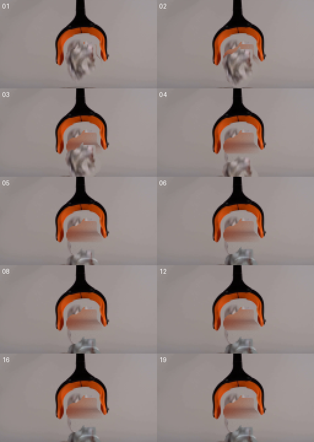
视觉工具实际返回图片 8
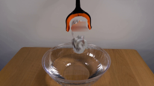
视觉工具实际返回图片 9
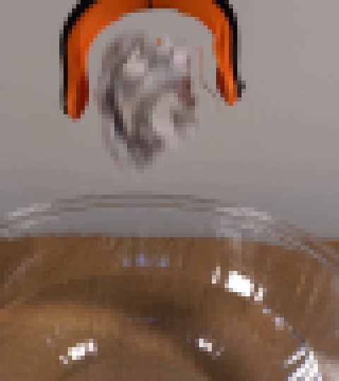
视觉工具实际返回图片 10
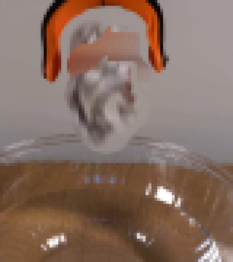
视觉工具实际返回图片 11
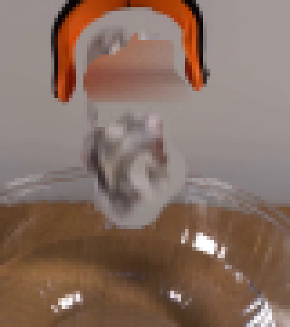
视觉工具实际返回图片 12
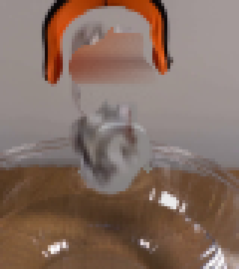
视觉工具实际返回图片 13
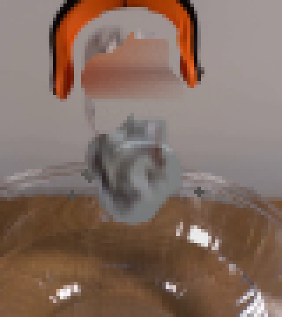
视觉工具实际返回图片 14
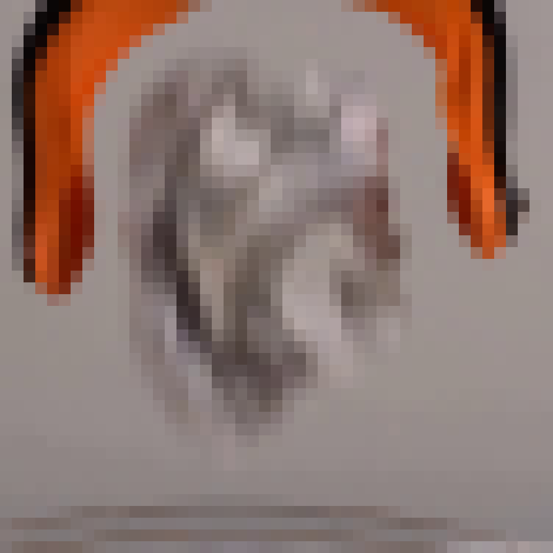
视觉工具实际返回图片 15
视觉工具实际返回图片 16
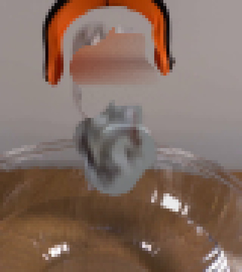
视觉工具实际返回图片 17
视觉工具实际返回图片 18
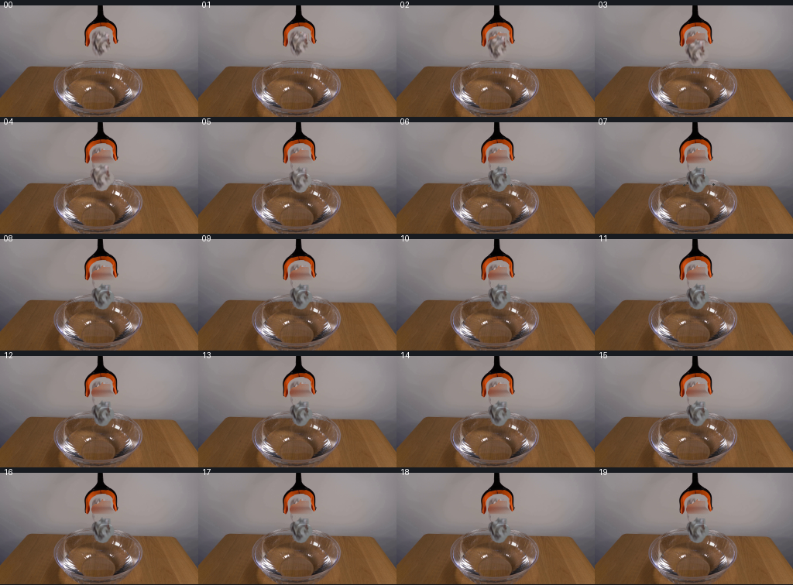
视觉工具实际返回图片 19
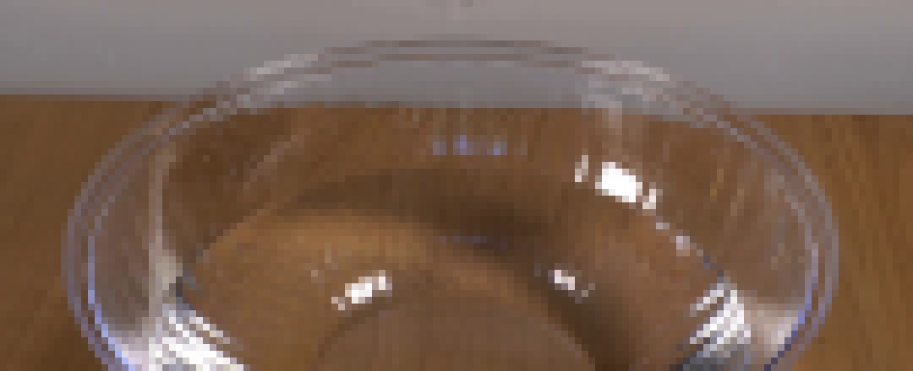
视觉工具实际返回图片 20
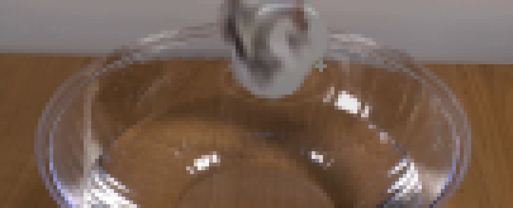
视觉工具实际返回图片 21
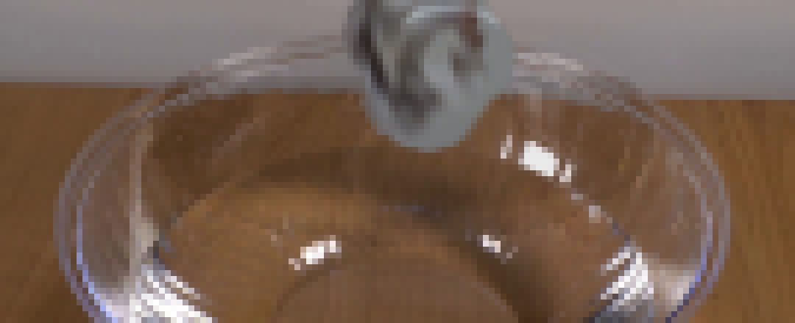
保存候选 2 份；完成命令 22 次；可验证图片返回 21 张。原始 API 响应与完整日志保留在本地。